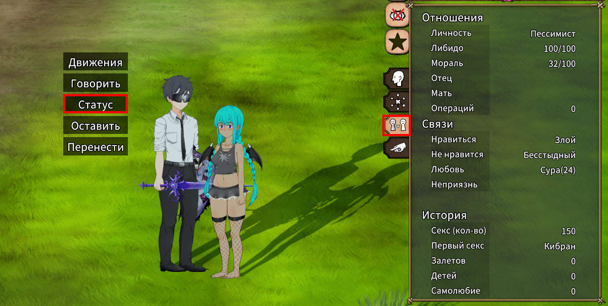
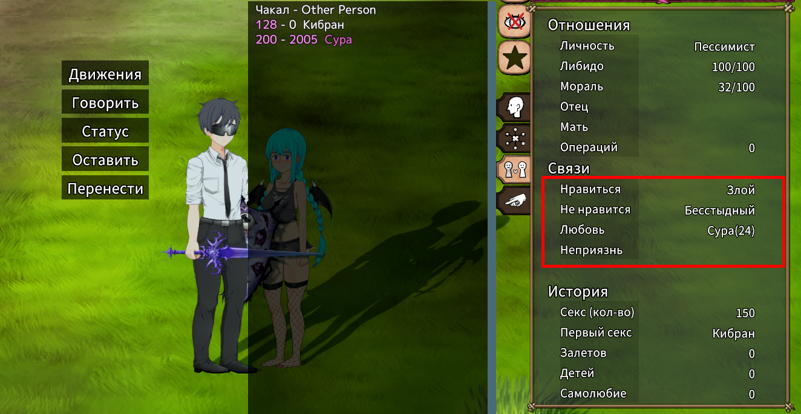
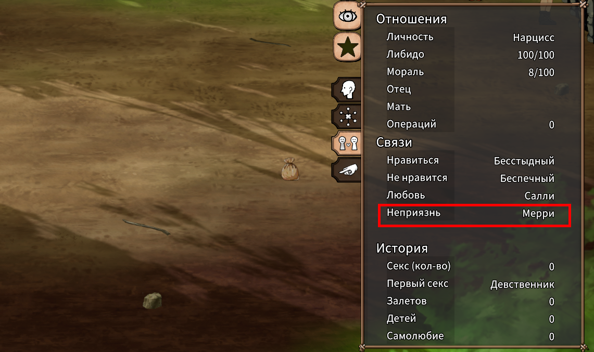
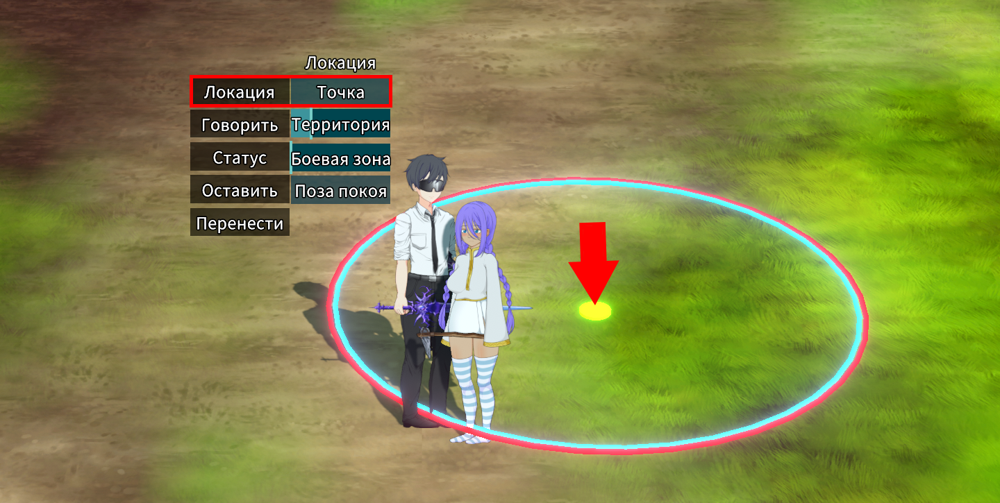
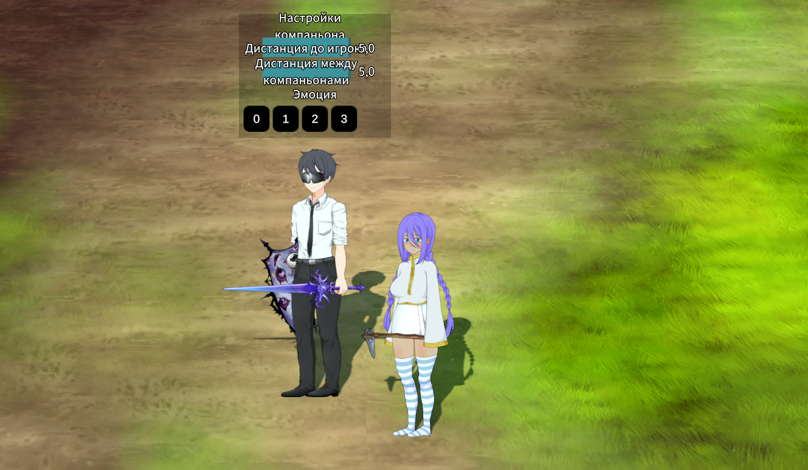

Развитие отношений
Каждый NPC обладает уникальным характером и предпочтениями — одни типы личности им нравятся, другие вызывают неприязнь. Чтобы наладить связь между персонажами, важно учитывать их совместимость и подбирать пары с нейтральным или положительным отношением друг к другу.
Чтобы узнать характер и предпочтения NPC, кликните по нему левой кнопкой мыши (NPC должен быть дружественный с положительным значением морали!), в открывшемся меню выберите «Статус», затем перейдите во вкладку «Отношения» в появившемся справа окне.
Подробности об отношениях можно узнать, наведя курсор на соответствующую область интерфейса.
Отношения между NPC с несовместимыми характерами, проживающими в одном поселении, будут постепенно ухудшаться, что может привести к взаимной неприязни и к снижению морали у "враждующих" NPC.
Так же об испорченных отношениях будет уведомление на экране,вверху слева
Также конфликты могут возникать, если несколько НПС симпатизируют одному и тому же персонажу. Чтобы этого избежать, можно назначать "враждующим" NPC свою территорию, выбрав в меню диалога с NPC пункт "Локация" затем "Точка"
Улучшение отношений между главными героями и NPC
Отношения важны также между NPC и игроком. Пока уровень привязанности недостаточно высок, некоторые действия будут недоступны.
Способы улучшить отношения:
- Совместные приключения — берите NPC с собой в путешествия и со временем их расположение к вам будет расти.
- Танцы — нажмите Q, чтобы открыть меню танцев. Танцуя рядом с NPC, вы быстро повысите уровень отношений. 
-
Использование кодов — самый простой и самый неинтересный способ.
- Откройте меню персонажа, нажав на него левой кнопкой мыши, в меню выберите"Следовать", затем откройте чат (Enter) и введите:
/love— постепенно увеличивает отношения на +5. Для остановки прироста, сохраните и загрузите игру с этого сохранения./inclove— разово добавляет +100 к отношениям. Возможно регулярное использование.
- Откройте меню персонажа, нажав на него левой кнопкой мыши, в меню выберите"Следовать", затем откройте чат (Enter) и введите:
В зависимости от личности NPC и выбранного типа танца отношение может как повышаться,так и понижаться. У NPC, которые не реагируют на танец вашего персонажа(при этом они стоят рядом) отношение с этим персонажем будут уменьшаться,при этом над NPC будут появляться цифры изменения отношений


Выбирайте способ по душе и развивайте отношения с персонажами!